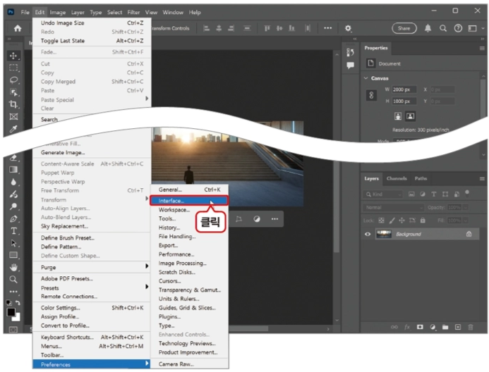
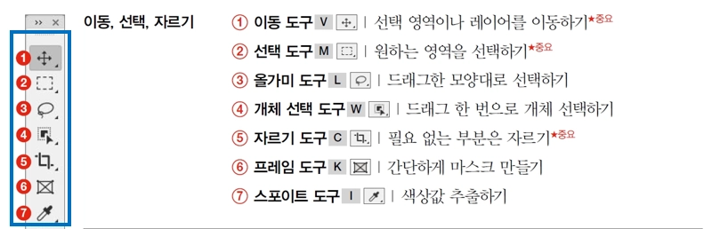
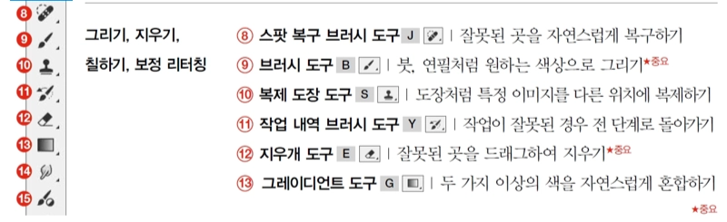
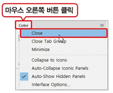

[1차시] 01_포토샵이란?
1. 포토샵이란?
어도비 포토샵(Adobe Photoshop)은 컴퓨터 그래픽 및 사진 편집 분야의 세계 표준 프로그램으로 자리 잡은 비트맵 기반 이미지 편집 소프트웨어
1.1. 포토샵의 유래


- Display 프로그램 개발(1987년)
미국 미시간 대학교 박사과정 학생인 토머스 놀(Thomas Knoll)이 흑백 매킨토시에서 흑백 이미지를 회색조로 표현하는 소프트웨어 'Display'를 개발함.
- Photoshop으로의 발전(1988년)
특수효과 감독인 형 존 놀(John Knoll)이 합류하여 디지털 이미지 처리 기능을 추가하고 이름을 'Photoshop'으로 변경함.
- 어도비 시스템즈 라이선스 계약(1989년)
어도비(Adobe Systems)의 아트 디렉터 러셀 브라운의 눈에 띄어 독점 판매 라이선스 계약을 체결함.
- Photoshop 1.0 정식 출시(1990년)
매킨토시용 Photoshop 1.0이 정식 출시되며 디지털 이미지 편집의 대중화 시대를 엶.
1.2. 포토샵의 핵심 특징
- 비트맵(Bitmap/Raster) 기반 편집
- 픽셀(Pixel)이라는 점들로 이미지를 구성하여 사진의 미세한 색조, 명암, 질감을 사실적으로 표현함.
- 레이어(Layer) 시스템
- 이미지 요소들을 투명 필름처럼 겹겹이 쌓아 올려 개별 수정이 가능하며, 원본 손상을 최소화하는 비파괴 편집을 지원함.
- 강력한 정밀 합성 및 보정
- 누끼 따기(배경 분리), 피부 보정, 색상 교정, 필터 효과 등 정교한 작업 도구를 제공함.
- 생성형 AI 기술(Adobe Firefly) 통합
- 텍스트 프롬프트 입력만으로 이미지를 확장하거나 배경·오브젝트를 생성/삭제하는 생성형 채우기 기능 탑재됨.
- 광범위한 호환성
- PSD 자체 확장자 외에도 JPEG, PNG, TIFF 등 대부분의 그래픽 포맷 및 어도비 제품군(일러스트레이터, 프리미어 등)과 완벽 연동됨.
1.3. RGB vs CMYK
- RGB: 빛의 3원색(Red, Green, Blue)을 조합하는 가산혼합 방식으로, 색을 더할수록 밝아져 흰색이 되는 모니터·스마트폰 등 디스플레이용 색상 모델
- CMYK: 색료의 4원색(Cyan, Magenta, Yellow, Key/Black)을 조합하는 감산혼합 방식으로, 색을 더할수록 어두워져 검은색에 가까워지는 인쇄·출력물용 색상 모델
1.4. 이미지 파일 포맷
| 구분 | PSD | JPEG (JPG) | PNG | GIF |
|---|---|---|---|---|
| 풀어쓴 이름 | Photoshop Document | Joint Photographic Experts Group | Portable Network Graphics | Graphics Interchange Format |
| 압축 방식 | 무압축 (원본 보존) | 손실 압축 (Lossy) | 비손실 압축 (Lossless) | 비손실 압축 (Lossless) |
| 투명도 지원 | O (레이어 투명도) | X (배경 흰색 처리) | O (알파 채널 정밀 투명) | O (단일 색상 투명) |
| 최대 색상 수 | 제한 없음 (16-bit/32-bit) | 약 1,670만 색상 (24-bit) | 약 1,670만 색상 (24/32-bit) | 256 색상 (8-bit) |
| 움직임 (애니메이션) | X | X | X (APNG 별도) | O (움짤 지원) |
| 용도 / 용량 | 작업 원본 파일 (용량 매우 큼) | 웹용 사진, 인쇄물 (용량 매우 작음) | 웹용 그래픽, 로고, 아이콘 (용량 중간) | 짧은 애니메이션 (용량 작음) |
| 주요 특징 | 레이어, 마스크, 문자 정보 등 모든 작업 상태 보존 | 용량 대비 화질이 좋아 사진 저장 표준. 저장 반복 시 화질 저하 발생 | 깨끗한 투명 배경(누끼) 지원. 선명한 텍스트 및 그래픽에 최적 | 색상 수가 적어 고화질 사진 표현은 불가능하나 용량이 가벼움. |
1.5. 색의 3속성
1.6. 포토샵의 활용 분야
1.6.1. 사진 리터칭과 합성

1.6.2. 그래픽 작업

1.6.3. 타이포그래피, 캘리그래피, 매트 페인팅

1.6.4. 웹/앱 콘텐츠 디자인

1.6.5. 인포그래픽, 광고 디자인

1.7. 포토샵 화면
1.7.1. 홈 화면

1.7.2 기본 화면

1.7.3. 화면 밝게 & 어둡게
- 메뉴바에서 [Edit] - [Preferences] - [Interface] 선택


1.7.4. 도구바
(1) 이동 선택, 자르기 도구




| 아이콘 | 도구 이름 | 단축키 | 영문명 및 어원 | 주요 기능 |
|---|---|---|---|---|
| ✥ | 이동 도구 | V | Move Tool | 선택한 레이어나 객체를 위치 이동 |
| 🔲 | 선택 윤곽 도구 | M | Marquee Tool | 사각형, 원형 형태의 기본 영역 선택 |
| 🪢 | 올가미 도구 | L | Lasso Tool | 자유 형태, 다각형, 자성 올가미 선택 |
| 🪄 | 빠른 선택 / 마술봉 | W | Magic Wand | AI 기반 개체 인식 또는 색상 기준 영역 선택 |
| ✂️ | 자르기 도구 | C | Crop Tool | 캔버스 크기 조절 및 불필요한 영역 잘라내기 |
| 🖼️ | 프레임 도구 | K | Frame Tool | 이미지를 배치할 자리 표시자(프레임) 생성 |
| 🧪 | 스포이트 도구 | I | Eyedropper Tool | 이미지 내 특정 위치의 색상 추출 |
(2) 그리기, 지우기, 칠하기, 보정 리터칭



| 아이콘 | 도구 이름 | 단축키 | 영문명 및 어원 | 주요 기능 |
|---|---|---|---|---|
| 🩹 | 스팟 복구 브러시 | J | Jump / Healing Brush | 잡티, 흉터, 불필요한 요소 자동 정밀 제거 |
| 🖌️ | 브러시 도구 | B | Brush Tool | 지정한 전경색과 모양으로 드로잉 |
| 🏵️ | 도장 도구 | S | Clone Stamp Tool | 이미지의 특정 영역을 그대로 복사하여 칠함 |
| ↺🖌️ | 작업 내역 붓 | Y | History Brush | 특정 작업 시점(State)의 원본 상태로 복원 |
| 🧹 | 지우개 도구 | E | Eraser Tool | 레이어의 이미지 영역을 지우거나 투명하게 처리 |
| 🎨 | 그라디언트 / 페인트통 | G | Gradient Tool | 색상 그라데이션 적용 또는 면 전체 채우기 |
| 💧 | 블러 / 선명하게 | - | Blur / Sharpen / Smudge | 영역을 흐리게, 선명하게, 또는 문지름 |
| ☀️ | 닷지 / 번 / 스폰지 | O | Dodge / Burn / Sponge | 영역을 밝게, 어둡게, 또는 채도 조절 |
(3) 벡터, 드로잉, 문자, 도형 도구

| 아이콘 | 도구 이름 | 단축키 | 영문명 및 어원 | 주요 기능 |
|---|---|---|---|---|
| ✒️ | 펜 도구 | P | Pen Tool | 정교한 베지에 곡선 패스 및 벡터 패스 생성 |
| T | 문자(텍스트) 도구 | T | Type / Text Tool | 가로 또는 세로 방향으로 글자 입력 |
| ↗️ | 패스 / 직접 선택 | A | Path Arrow Selection | 펜 도구로 그린 패스 전체 또는 기준점 선택 |
| ⬛ | 도형 도구 | U | User shape / Rectangle | 사각형, 원, 다각형 등 벡터 도형 그리기 |
(4) 화면 이동, 확대/축소 도구

| 아이콘 | 도구 이름 | 단축키 | 영문명 및 어원 | 주요 기능 |
|---|---|---|---|---|
| ✋ | 손 도구 | H / Space | Hand Tool | 확대된 화면 내에서 캔버스 위치 이동 |
| 🔄 | 뷰 회전 도구 | R | Rotate View Tool | 작업 캔버스 자체를 회전하여 그리기 편하게 전환 |
| 🔍 | 돋보기 도구 | Z | Zoom Tool | 화면 확대(+) 및 축소(-) |
| 🔲🔳 | 전경색 / 배경색 | D / X | Default / eXchange | D: 기본(흑/백) 초기화X: 전경색과 배경색 전환 |
| 🔲⚪ | 퀵 마스크 모드 | Q | Quick Mask | 브러시로 칠해 정밀한 선택 영역을 만드는 모드 |
(5) 색상 선택, 보기 모두 도구

(6) 도구바 넓히기 & 좁히기
- 작업 영역을 넓게 사용하려면 도구바를 한 줄로 선택하는 것이 좋음.

(7) 패널 조작하기

- 레이어를 추가하거나 삭제하고 블렌딩 모드나 레이어 스타일과 같은 다양한 레이어의 기능을 관리함.


- 이미지의 색상값을 채널별로 분리하여 볼 수 있고, 필요에 따라 알파 채널을 만들 수도 있음. 알파 채널(Alpha Channel)은 색상 정보가 아닌 선택 영역(선택 범위)과 투명도 정보만을 저장하는 흑백 특수 채널임.

| 아이콘 | 패널 이름 | 단축키 | 영문명 및 어원 | 주요 기능 및 역할 |
|---|---|---|---|---|
| 📑 | 레이어 | F7 | Layers | 이미지 요소를 층층이 쌓아 관리하는 포토샵의 핵심 패널. |
| 🔴🟢🔵 | 채널 | - | Channels | RGB 또는 CMYK 각 색상별 정보 채널과 정밀한 선택 영역 저장용 알파 채널 관리 |
| ☯️ | 조정 | - | Adjustments | 원본 이미지를 훼손하지 않는 비파괴 방식의 색상/명암 보정 레이어 생성 |
| 📜 | 작업 내역 | - | History | 작업했던 이전 단계들을 기록하여 원하는 과거 시점으로 되돌리거나 스냅샷을 만들어 비교 관리 |
| ⚙️ | 속성 | - | Properties | 현재 선택한 레이어, 마스크, 도형, 텍스트의 세부 옵션과 관련 조작을 유동적으로 표시 |
| ✒️ | 패스 | - | Paths | 펜 도구(P)나 벡터 도형으로 그린 외곽선(Path) 정보를 저장하고 선택 영역으로 변환 |
| ✍️ | 문자 | - | Character | 텍스트의 폰트 종류, 크기, 자간, 장평, 행간 등 세부 타이포그래피 옵션 설정 |
| 🎨 | 색상 / 견본 | F6 | Color / Swatches | 전경색과 배경색을 정밀하게 조합하거나 자주 쓰는 컬러 팔레트를 저장하여 재사용 |
패널 펼치고 접기

패널 분리하고 합치기
- 패널의 이름 부분을 클릭하고 캔버스 영역으로 드래그하면 패널이 분리됨. 분리되어 있는 패널을 다시 패녈 영역으로 드래그하면 패널이 합쳐짐.

패널 숨기기
- 패널의 이름 부분에서 마우스 오른쪽 버튼 클릭 → 메뉴의 [CLOSE] 선택

